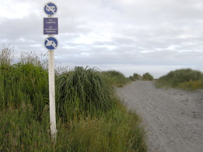
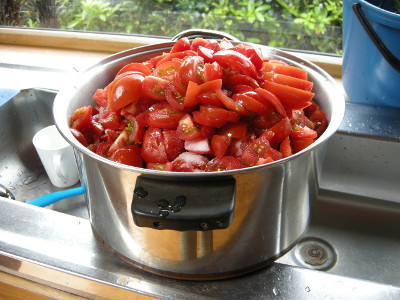
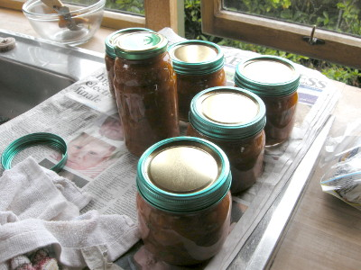
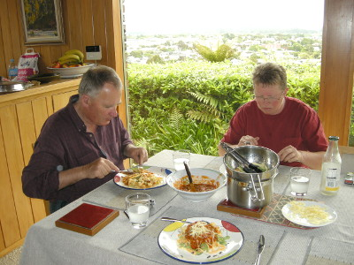

釣行日誌 ＮＺ編 「翡翠、黄金、そして銀塊」
町の書店で地図を買う
2010/12/03(FRI)-1
朝６時半に目覚めて食堂に行くと、グレースさんが綺麗な浴衣を着てくつろいでいた。誰かからのプレゼントだろうか。よても良く似合っているのでそう伝えると、このキモノを着て眠ると、本当にリラックスできるのよ、と答えてくれた。
朝食前に散歩に出かけた。また小径を通って車道へ出て、今度は海岸へ行ってみることにした。ひたすら西へ歩くと15分ほどで海岸へつながる散策道に出た。ホキティカの海岸は夕日が綺麗なので、人気の観光スポットになっているようで、入り口には、
「キャンプ禁止」
「夜を越しての駐車禁止」
などの注意標識があった。

海岸へ出たので南へ進み、流木の多い砂浜を歩いて河口まで行って、その名もズバリ、サンセット・ポイントを見てからから引き返した。夕方に散歩をするべきだったかな？
家に帰ると、グレースさんが朝食の支度をしてくれていた。今朝はトーストと各種手作りジャム、そして大瓶のミルクである。食パンは何というブランドか聞き忘れたが、御飯で言うと五穀米、みたいな感じの色つき粗挽きな食感の美味しいトーストであった。
朝食後はグレースさんの洗濯物干しを手伝い、続いて、この時期のトロレイ夫妻の一大イベントであるトマトソース作りに参加させてもらった。

よく熟れたトマトをスライスして鍋で煮込み、熱湯で煮沸殺菌した瓶に詰めて保存すると、パスタなどに重宝するソースが出来るらしい。キッチンの電気コンロ２台とバルコニーに置かれたプロパンガス式バーベキューコンロを総動員してトマトを煮込む。煮えたトマトを慎重に瓶に詰め、きっちり閉めた瓶の蓋に、グレースさんがマジックペンで作成日を記入してゆく。ざっと６個ほどの瓶に真っ赤なトマトソースが詰められて、台所は壮観な眺めとなった。

大仕事が片付いた後は、町の書店へ出かけて地図を買うことにした。何度か道を訊ねたのちに大きな書店にたどり着くと、思わず見とれてしまうほどの、極めて美人の店員さんが、地図が陳列されている棚を教えてくれた。視線が彼女に釘付けとなってしまい、しばし呆然となったが、気を持ち直して３枚の地図を買った。先日ブリントさんと遠征したサウス・ウェストランドの主要部、1/250,000と 1/50,000 を１枚ずつ、そしてホキティカの 1/250,000 を１枚。いずれも NZ Topo Map という政府発行の地形図で、１枚9.99NZドルであった。
昨今では、http://www.topomap.co.nz/ などのウェブサイトで、パソコン・タブレット・スマホからオンラインで同等の地図を見ることができるし、上記サイトでは、地名から検索したり、グーグルマップと連携して、双方の地図や航空写真を透過させながら表示することも可能なので、紙の地図はいささか時代遅れなのだが、老眼の進んできた今でも紙の地図を虫眼鏡で見ることが好きな僕は、ついつい買い込んでしまうのであった。まぁ紙の地図は電池が要らないし、落としても壊れないし、パソコンで印刷したのと違って濡れても滲まないから雨の中でも見られるし、ベストのポケットに楽に入るからなぁ。今後は老眼鏡が必須となるだろうが......
＜余談ではあるが、2017年9月現在、この時買った地図を見直していたら、あの日三人で行った湖らしき地形を発見したので、同じ位置をグーグルマップの大きな解像度の航空写真で探したら、ビンゴ！ようやく見つけた！ 懐かしいその風景に思わず胸が熱くなった。＞
見目麗しき店員さんに30ドル出してお釣りをもらい、後ろ髪を引かれつつその書店を後にした。
家に戻ると、トマトピューレのパスタとサラダで昼食となった。グレースさんの手料理は本当に美味しい。三人の息子たちが皆いずれも、背の高いがっしりとした体躯になったのも、このお母さんの美味しい食事あってのことだろうと思えた。

お腹が満たされたので、失礼して寝室に戻り、昼寝をすることにした。さすがに疲れが出たのか、短時間だったがぐっすりと眠った。
釣行日誌ＮＺ編 目次へ
サイトマップ
ホームへ
お問い合わせ